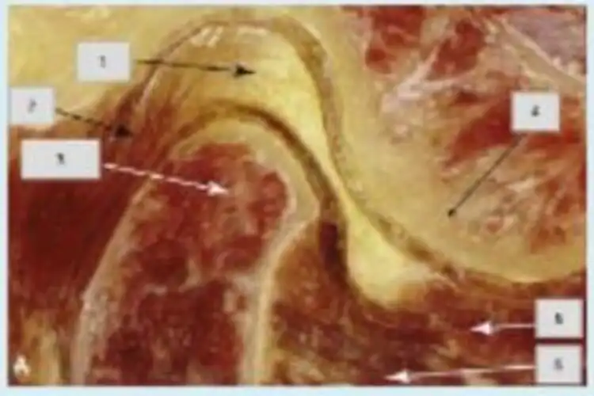
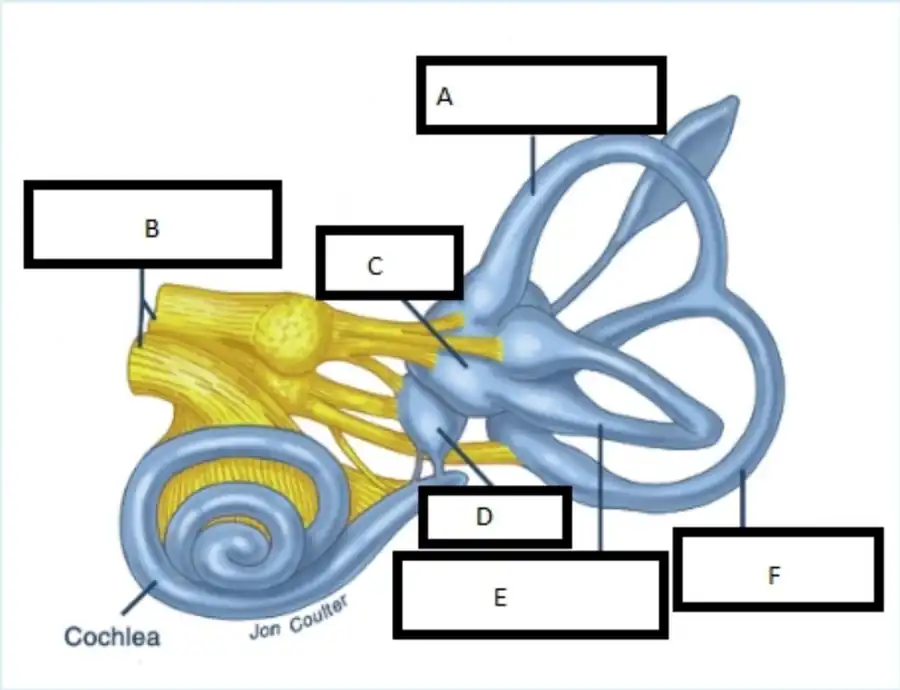

Articulation temporo-mandibulaire (ATM) — QCM en ligne
Les muscles ptérygoïdiens latéraux et ptérygoïdiens médiaux sont impliqués dans le mouvement de latéralité de la mandibule. Vrai ou faux ?
Corrigé proposé
Vrai. En latéralité, le ptérygoïdien latéral du côté opposé tire le condyle en avant, aidé du ptérygoïdien médial du même côté.
Chaque fois que nous entendons un bruit articulaire, nous sommes face à un déplacement du disque avec réduction. Vrai ou faux ?
Corrigé proposé
Faux. Un bruit articulaire n'est pas toujours un déplacement discal réductible. Ce peut être une crépitation (atteinte dégénérative), une hypermobilité du condyle (subluxation au-delà de l'éminence) ou une irrégularité des surfaces. Le claquement réciproque (à l'ouverture et à la fermeture) est le signe typique du déplacement avec réduction.
La céphalée attribuée à la DTM est caractérisée par une douleur dans la région (choisissez l'option correcte) :
- aTemporale
- bOccipitale
- cCervicale
- dToutes les précédentes
Corrigé proposé
Réponse : a. Selon les critères diagnostiques des DTM (DC/TMD) et la classification ICHD-3, la céphalée attribuée à une DTM siège dans la région temporale. Elle est modifiée par les mouvements de la mâchoire et reproduite par la palpation du temporal.
Les muscles supra-hyoïdiens sont responsables du mouvement suivant (choisissez l'option correcte) :
- aProtrusion
- bDépression de la mâchoire
- cÉlévation de la mandibule
- dLatéralisation de la mandibule
Corrigé proposé
Réponse : b. Les muscles supra-hyoïdiens (digastrique, mylo-hyoïdien, génio-hyoïdien) abaissent la mandibule quand l'os hyoïde est fixé par les infra-hyoïdiens.
Cette image représente les principales structures de l'articulation temporo-mandibulaire. Faites-en la légende (structures 1 à 6) :
🖼️ Afficher le schéma 13 Ko

Corrigé proposé
Proposition d'après le schéma (coupe sagittale, le haut est en haut et l'avant à droite) :
- Disque articulaire, sa bande postérieure au-dessus du condyle (sous la fosse mandibulaire)
- Zone bilaminaire, ou tissu rétrodiscal
- Condyle (tête) de la mandibule
- Éminence (tubercule) articulaire du temporal
- Ptérygoïdien latéral, faisceau inférieur
- Ptérygoïdien latéral, faisceau supérieur, qui s'insère sur le disque et la capsule
Le faisceau profond du muscle masséter a son origine au bord de l'arcade zygomatique et son insertion à l'angle de la mandibule. Vrai ou faux ?
Corrigé proposé
Faux. Cette description est celle du faisceau superficiel : bord inférieur de l'arcade zygomatique (deux tiers antérieurs) jusqu'à l'angle de la mandibule. Le faisceau profond part de la face interne et du tiers postérieur de l'arcade. Il se termine sur la face latérale de la branche montante, jusqu'au processus coronoïde.
Le traitement chirurgical est très fréquent dans le cadre d'une stratégie de traitement de la dysfonction temporo-mandibulaire. Vrai ou faux ?
Corrigé proposé
Faux. Le traitement des DTM est d'abord conservateur : éducation, autogestion, kinésithérapie, gouttière, médicaments. La chirurgie est rare et réservée à des cas sélectionnés.
Les examens complémentaires de diagnostic les plus utilisés dans le domaine des dysfonctions temporo-mandibulaires sont (choisissez l'option correcte) :
- aIRM et orthopantomographie
- bTDM et IRM
- cRadiographie et TDM
- dOrthopantomographie et radiographie
Corrigé proposé
Réponse : a. L'orthopantomographie (radiographie panoramique) donne une vue d'ensemble des structures osseuses. L'IRM est l'examen de référence pour le disque et les tissus mous.
Le muscle masséter (faisceau superficiel) et le muscle digastrique sont responsables du mouvement d'ouverture de la bouche. Vrai ou faux ?
Corrigé proposé
Faux. Le masséter est un muscle élévateur : il ferme la bouche. L'ouverture est assurée par le digastrique, les autres supra-hyoïdiens et le ptérygoïdien latéral (faisceau inférieur).
La douleur orofaciale est la douleur liée exclusivement aux tissus du visage. Vrai ou faux ?
Corrigé proposé
Faux. La douleur oro-faciale concerne la face, la bouche, les dents, l'ATM et les structures associées. Elle peut aussi être projetée (cervicale, par exemple) ou neuropathique.
Les claquements (clics) sont extrêmement fréquents en cas de pathologie dégénérative de l'articulation temporo-mandibulaire. Vrai ou faux ?
Corrigé proposé
Faux. Les clics sont typiques du déplacement discal avec réduction. Dans l'atteinte dégénérative, on entend surtout des crépitations.
Le bruxisme a deux cycles circadiens et c'est l'acte de grincer des dents. Vrai ou faux ?
Corrigé proposé
Faux. Il est vrai que le bruxisme a deux formes circadiennes, du sommeil et d'éveil. Mais ce n'est pas seulement grincer des dents : c'est une activité répétitive des muscles masticateurs qui comprend aussi le serrement des dents et le blocage ou la poussée de la mandibule.
Les bruits articulaires et la limitation d'amplitude lors de l'ouverture de la bouche sont les principales raisons pour lesquelles les patients consultent des spécialistes des dysfonctions temporo- mandibulaires. Vrai ou faux ?
Corrigé proposé
Faux. Les patients consultent d'abord pour la douleur. Les bruits et la limitation d'ouverture viennent ensuite.
La thérapie manuelle est la stratégie la plus utilisée dans le traitement de la DTM. Vrai ou faux ?
Corrigé proposé
Proposition : Faux. Les approches les plus utilisées sont l'éducation et l'autogestion, puis la gouttière occlusale. La thérapie manuelle, associée à l'exercice, n'est qu'une partie de la prise en charge conservatrice.
La branche ophtalmique (V1), la branche maxillaire (V2) et la branche mandibulaire (V3) sont les trois branches principales du nerf trijumeau. Vrai ou faux ?
Corrigé proposé
Vrai.
La dysfonction temporo-mandibulaire affecte plus d'hommes que de femmes. Vrai ou faux ?
Corrigé proposé
Faux. Les DTM touchent davantage les femmes, environ deux femmes pour un homme.
Le muscle temporal a son origine dans l'aponévrose temporale et son insertion sur le processus coronoïde de la mandibule. Vrai ou faux ?
Corrigé proposé
Vrai, au sens du cours. Le temporal naît de la fosse temporale et de la face profonde de l'aponévrose temporale. Il se termine sur le processus coronoïde et le bord antérieur de la branche montante.
Exercice thérapeutique (entraînement, pliométrie, flexibilité) — juin 2020
QCM (sélectionner la bonne option)
L'objectif principal de l'entraînement en pliométrie est de développer la composante de force associée principalement à :
- aLa vitesse
- bLa résistance
- cL'étirement
Corrigé proposé
Réponse : a. La pliométrie développe la puissance, c'est-à-dire la force produite vite (force-vitesse), grâce au cycle étirement-détente.
La séquence idéale pour l'entraînement en pliométrie est la suivante :
- aAllongement musculaire rapide (phase excentrique) ; courte période de repos ; contraction musculaire rapide (phase concentrique)
- bContraction musculaire rapide (phase concentrique) ; courte période de repos ; allongement musculaire rapide (phase excentrique)
- cAllongement musculaire rapide (phase excentrique) ; contraction musculaire rapide (phase concentrique) ; courte période de repos
Corrigé proposé
Réponse : a. Le cycle est le suivant : phase excentrique rapide, puis phase d'amortissement (couplage) très courte, puis phase concentrique rapide.
L'un des avantages de l'entraînement en force isométrique est que :
- aIl permet un transfert entre la force statique et la force dynamique
- bLe gain de force ne se produit que dans les amplitudes de mouvement dans lesquelles il y a eu du travail
- cPour un même gain de force, il faut moins de temps que le travail dynamique
Corrigé proposé
Réponse : c. L'isométrique fait gagner de la force vite, en séances courtes et sans matériel. Le transfert vers la force dynamique est faible (a). Le gain limité à l'angle travaillé (b) est un inconvénient.
Les étirements passifs visent à :
- aLes deux options sont correctes
- bAugmenter la flexibilité statique et la capacité de maintenir certaines postures
- cAugmenter la flexibilité associée aux grands mouvements
Corrigé proposé
Réponse : b. Les étirements passifs améliorent la flexibilité statique et le maintien des postures. Les grands mouvements se préparent par des étirements dynamiques ou actifs.
Le Functional Movement Screening (FMS) est un outil :
- aD'évaluation
- bDe diagnostic
- cDe traitement des patients symptomatiques
Corrigé proposé
Réponse : a. Le FMS est un outil de dépistage, donc d'évaluation de la qualité du mouvement. Il ne sert ni au diagnostic ni au traitement.
En ce qui concerne l'entraînement sensori-moteur, le concept de stabilité structurelle est lié à :
- aL'activation neuromusculaire et le système sensori-moteur
- bLa capsule articulaire et la congruence articulaire
- cDes mécanismes d'activation globale
Corrigé proposé
Réponse : b. La stabilité structurelle, ou passive, dépend de la capsule, des ligaments et de la congruence des surfaces. La stabilité fonctionnelle, ou dynamique, dépend du système neuromusculaire.
L'entraînement de la flexibilité permet :
- aUne capacité accrue à produire des changements rapides de l'état passif à l'état actif
- bDe traiter les lésions musculo-tendineuses aiguës
- cUne plus grande capacité de relaxation musculaire
Corrigé proposé
Réponse : c. L'entraînement de la flexibilité améliore la capacité de relâchement musculaire. Il ne traite pas les lésions musculo-tendineuses aiguës.
Les exercices en chaîne cinétique ouverte sont caractérisés par :
- aLe segment distal est libre ; l'exercice est exécuté dans plusieurs plans de mouvement ; contraction des muscles agonistes
- bLe segment distal est libre ; il n'y a qu'un seul plan de mouvement ; contraction des muscles agonistes
- cLe segment distal est fixé ; l'exercice est exécuté dans plusieurs plans de mouvement ; le travail est agoniste / antagoniste
Corrigé proposé
Réponse : b. En chaîne ouverte, le segment distal est libre, le mouvement se fait souvent dans un seul plan, et les muscles agonistes travaillent de façon isolée.
Concernant les principes généraux d'intervention pour gagner en flexibilité (sélectionner la mauvaise option) :
- aLes exercices doivent être effectués dans des postures corporelles équilibrées et confortables pour obtenir un meilleur état de relaxation
- bLes exercices de flexibilité doivent être effectués régulièrement, car c'est une capacité qui se perd très rapidement
- cIl est normal que la douleur survienne pendant les étirements, car cela indique que l'intervention est efficace
Corrigé proposé
Réponse : c (la fausse). La douleur n'est pas un signe d'efficacité. L'étirement doit rester dans une tension tolérable et non douloureuse, sans quoi il déclenche une contraction réflexe de défense.
L'évaluation fonctionnelle permet d'identifier chez le patient :
- aLes changements de mouvement associés à un dysfonctionnement
- bLa modification structurelle liée à un mouvement
- cLa douleur associée à la structure lésée
Corrigé proposé
Réponse : a. L'évaluation fonctionnelle cherche les défauts de mouvement liés à la dysfonction.
Questions courtes
Identifiez 3 des éléments qui doivent être pris en compte lors de la planification d'un programme d'exercices de force.
Corrigé proposé
Trois éléments parmi ceux-ci :
- l'objectif (force maximale, hypertrophie, endurance, puissance) ;
- l'intensité (charge en % de 1 RM) ;
- le volume (séries × répétitions) ;
- la fréquence des séances ;
- les temps de repos ;
- le type de contraction et la vitesse ;
- le choix et l'ordre des exercices ;
- la progression (surcharge progressive) ;
- les caractéristiques du patient (âge, pathologie, niveau).
Distinguez les concepts de mobilité et de flexibilité.
Corrigé proposé
- La flexibilité est la capacité des tissus, surtout des muscles et tendons, à s'allonger : c'est leur extensibilité, qui autorise une amplitude, plutôt passive.
- La mobilité est la capacité à déplacer activement un segment dans son amplitude. Elle combine la flexibilité, l'arthrocinématique et le contrôle neuromusculaire (force, coordination).
Dans l'entraînement sensori-moteur, identifiez les 3 systèmes qui, intégrés les uns aux autres, contribuent à l'équilibre.
Corrigé proposé
Les systèmes visuel, vestibulaire et somatosensoriel (proprioception, sensibilité plantaire).
Quels sont les noms des 2 modèles courants de déséquilibre musculaire décrits par Vladimir Janda ?
Corrigé proposé
Le syndrome croisé supérieur (upper crossed syndrome) et le syndrome croisé inférieur (lower crossed syndrome).
Identifiez 5 avantages de la réalisation de l'entraînement sensori-moteur.
Corrigé proposé
Cinq avantages parmi ceux-ci :
- meilleure proprioception ;
- meilleur contrôle neuromusculaire ;
- stabilité articulaire dynamique ;
- équilibre ;
- temps de réaction plus court ;
- coordination ;
- prévention des lésions et des récidives (entorses de cheville, LCA) ;
- prévention des chutes ;
- meilleure performance fonctionnelle et sportive.
Rééducation vestibulaire — QCM en ligne
Vrai ou faux
Indiquez si l'affirmation est vraie (V) ou fausse (F), en justifiant les fausses (pas de point si la réponse n'est pas justifiée).
Le mécanisme d'excitation neurale des cellules ciliées se traduit par un rapprochement du kinocil par rapport aux stéréocils, et l'inhibition neurale par leur éloignement.
Corrigé proposé
Vrai. Quand les stéréocils s'inclinent vers le kinocil, la cellule se dépolarise : c'est l'excitation. Quand ils s'en éloignent, elle s'hyperpolarise : c'est l'inhibition.
Dans une hypofonction vestibulaire unilatérale, pour optimiser le système vestibulaire, la stratégie de compensation à utiliser est celle de substitution.
Corrigé proposé
Faux. Dans une hypofonction unilatérale, on utilise surtout l'adaptation : on augmente le gain du réflexe vestibulo-oculaire par des exercices de stabilisation du regard (X1, X2), en s'appuyant sur l'habituation. La substitution est réservée aux pertes bilatérales ou complètes.
Le vertige positionnel paroxystique bénin est un dysfonctionnement biomécanique dû à une lésion du nerf vestibulaire.
Corrigé proposé
Faux. Le VPPB est bien un trouble biomécanique, mais il est dû à des otoconies détachées de l'utricule, passées dans un canal (canalolithiase) ou collées à la cupule (cupulolithiase). Le nerf vestibulaire n'est pas lésé.
Le réflexe vestibulo-oculaire peut être évalué par le head shaking test.
Corrigé proposé
Vrai. Le head shaking test fait apparaître un nystagmus en cas d'asymétrie du réflexe vestibulo-oculaire.
Le protocole d'exercices de Cawthorne et Cooksey a été l'un des premiers modèles d'intervention en physiothérapie vestibulaire.
Corrigé proposé
Vrai. Ce protocole date des années 1940.
L'une des causes de l'aréflexie vestibulaire bilatérale est l'ototoxicité de la gentamicine.
Corrigé proposé
Vrai.
Les symptômes de vertiges, de nausées, de vomissements et d'atteinte auditive font partie du tableau de la névrite vestibulaire.
Corrigé proposé
Faux. La névrite vestibulaire donne vertiges, nausées et vomissements, sans atteinte auditive. Si l'audition est touchée, il s'agit d'une labyrinthite.
La voie vestibulo-spinale est responsable du réflexe vestibulo-oculaire.
Corrigé proposé
Faux. La voie vestibulo-spinale commande la posture et l'équilibre. Le réflexe vestibulo-oculaire emprunte la voie vestibulo-oculomotrice (noyaux III, IV et VI).
Le réflexe vestibulo-oculaire est le mouvement oculaire opposé au mouvement de la tête afin de stabiliser le regard.
Corrigé proposé
Vrai. Le réflexe vestibulo-oculaire déplace les yeux à la même vitesse que la tête, en sens opposé, pour garder l'image sur la rétine.
La maladie de Ménière se caractérise par une triade de symptômes (vertiges, nausées et acouphènes) toujours permanents.
Corrigé proposé
Faux. La maladie de Ménière associe des crises de vertige, une surdité fluctuante et des acouphènes, avec une sensation d'oreille pleine. Ces symptômes sont épisodiques, pas permanents.
Lors d'un traumatisme crânio-encéphalique, il n'est pas possible d'avoir simultanément une lésion centrale et périphérique.
Corrigé proposé
Faux. Après un traumatisme crânien, on peut avoir à la fois une atteinte centrale et une atteinte périphérique (VPPB post-traumatique, commotion labyrinthique).
Le test clinique d'interaction sensorielle de l'équilibre, appliqué également sur les plateformes de posturographie, permet de suggérer les composantes motrices affectées.
Corrigé proposé
Faux. Le CTSIB et l'épreuve d'organisation sensorielle (SOT) de la posturographie orientent vers la composante sensorielle déficitaire (visuelle, vestibulaire ou somatosensorielle), pas vers la composante motrice.
L'échelle Dizziness Handicap Inventory évalue la qualité de la marche.
Corrigé proposé
Faux. Le DHI mesure le handicap perçu lié aux vertiges dans trois domaines : physique, émotionnel et fonctionnel. Il n'évalue pas la marche.
Le nystagmus vestibulaire spontané est le même que le nystagmus optocinétique car ils sont tous les deux physiologiques.
Corrigé proposé
Faux. Le nystagmus vestibulaire spontané est pathologique. Le nystagmus optocinétique est un réflexe physiologique.
QCM
Le réflexe vestibulo-spinal peut être évalué par :
- aHead Shaking Test
- bHead Thrust Test
- cTest d'acuité visuelle dynamique
- dTest de Fukuda
Corrigé proposé
Réponse : d. Le test de Fukuda (piétinement) évalue la voie vestibulo-spinale. Les trois autres tests explorent le réflexe vestibulo-oculaire.
La chaise rotatoire :
- aEn intervention, peut être utilisée à haute, moyenne ou basse fréquence
- bNe peut pas être utilisée pour l'évaluation
- cEst indiquée pour le traitement de l'hyperréflexie
- dN'est indiquée que pour le traitement des hyporéflexies
Corrigé proposé
Réponse : a. La chaise rotatoire sert aussi à l'évaluation. En rééducation, on peut l'utiliser à différentes fréquences, en hyporéflexie comme en hyperréflexie.
En rééducation vestibulaire, le premier objectif est :
- aAucune des précédentes
- bTout ce qui précède
- cPromouvoir la stabilisation posturale
- dPromouvoir la dynamique de l'interaction sensorimotrice
- ePromouvoir la stabilisation visuelle
Corrigé proposé
Réponse : e. Le premier objectif est la stabilisation du regard, par l'adaptation du réflexe vestibulo-oculaire. Viennent ensuite la stabilisation posturale et l'intégration sensori-motrice.
Quelle est la vestibulopathie centrale qui présente également des vertiges, des nausées et des vomissements ?
- aLabyrinthite
- bMaladie de Parkinson
- cAVC de l'artère cérébelleuse postéro-inférieure (PICA)
- dAVC de l'artère cérébrale antérieure
Corrigé proposé
Réponse : c. L'AVC de la PICA (syndrome de Wallenberg, cervelet) imite une atteinte périphérique : vertige, nausées, vomissements. La labyrinthite est périphérique.
Font partie des exercices de stabilisation visuelle :
- aLes exercices de poursuite lente
- bLes exercices sur posturographie
- cLes exercices sur surfaces instables
- dTout ce qui précède
- eAucune de ces réponses
Corrigé proposé
Réponse : a. La stabilisation du regard se travaille par des exercices oculomoteurs : X1 et X2, poursuite lente, saccades. Les surfaces instables et la posturographie travaillent la posture.
Quelle est la manœuvre de repositionnement indiquée pour un VPPB par canalolithiase du canal semi-circulaire postérieur droit ?
- aManœuvre de Semont
- bManœuvre de Dix-Hallpike
- cManœuvre du barbecue
- dManœuvre d'Epley
Corrigé proposé
Réponse : d. La manœuvre d'Epley est la manœuvre de repositionnement de référence pour la canalolithiase du canal postérieur. Celle de Semont est une alternative, plutôt pour la cupulolithiase. Le Dix-Hallpike est un test diagnostique. Le barbecue traite le canal horizontal.
La stimulation optocinétique thérapeutique est indiquée pour :
- aTous les dysfonctionnements vestibulaires
- bLes dysfonctionnements vestibulaires chroniques avec dépendance visuelle
- cUniquement les déficits multisensoriels
- dLes dysfonctionnements vestibulaires aigus sans dépendance visuelle
Corrigé proposé
Réponse : b. La stimulation optocinétique s'adresse aux atteintes vestibulaires chroniques avec dépendance visuelle.
Quel est le canal orienté dans le même plan que le canal semi-circulaire postérieur gauche ?
- aPostérieur droit
- bAntérieur droit
- cAntérieur gauche
- dHorizontal gauche
Corrigé proposé
Réponse : b. Les canaux verticaux fonctionnent par paires coplanaires : postérieur gauche avec antérieur droit (plan RALP), antérieur gauche avec postérieur droit (plan LARP).
Les mouvements oculaires saccadés peuvent être :
- aHypermétriques : la première saccade s'arrête avant la cible
- bHypométriques : la première saccade s'arrête après la cible
- cHypermétriques : la première saccade s'arrête après la cible
- dAucune des précédentes
Corrigé proposé
Réponse : c. Une saccade hypermétrique dépasse la cible, signe cérébelleux. Une saccade hypométrique s'arrête avant la cible. Les propositions a et b inversent les deux définitions.
La posturographie informatisée :
- aPermet de quantifier l'oscillation posturale en position orthostatique
- bEst indiquée à tous les stades d'une vestibulopathie
- cAgit sur le réflexe vestibulo-oculaire par biofeedback
- dAucune de ces réponses
Corrigé proposé
Réponse : a. La posturographie quantifie les oscillations posturales en station debout. Elle n'est pas indiquée en phase aiguë et elle n'agit pas sur le réflexe vestibulo-oculaire.
Dans le VPPB :
- aDans la canalolithiase, les cristaux adhèrent à la cupule
- bLe canal semi-circulaire le plus fréquemment touché est l'horizontal
- cLe traitement se fait par des médicaments
- dLa dégénérescence de l'utricule entraîne la libération des otolithes
Corrigé proposé
Réponse : d. La dégénérescence de la macule utriculaire libère des otoconies.
- a) Faux : quand les cristaux adhèrent à la cupule, c'est une cupulolithiase.
- b) Faux : le canal le plus touché est le postérieur.
- c) Faux : le traitement repose sur les manœuvres de repositionnement.
L'incapacité de maintenir la stabilisation du regard pendant le mouvement de la tête est définie comme :
- aUne intolérance au mouvement
- bUne sensation vertigineuse (tontura)
- cUne oscillopsie
- dUn vertige
Corrigé proposé
Réponse : c. L'oscillopsie est l'impression que l'environnement bouge quand on bouge la tête. Elle traduit un réflexe vestibulo-oculaire déficitaire.
Légende
Nommez chaque structure (A à F) et décrivez brièvement sa fonction (0,175 point par structure) :
🖼️ Afficher le schéma 14 Ko

Corrigé proposé
Proposition d'après le schéma (labyrinthe membraneux) :
- A : canal semi-circulaire antérieur (supérieur). Il détecte les accélérations angulaires dans son plan vertical (antéro-postérieur).
- B : nerf vestibulo-cochléaire (VIII). Il conduit au tronc cérébral les informations vestibulaires (vers les noyaux vestibulaires) et auditives.
- C : utricule. Organe otolithique, il détecte les accélérations linéaires horizontales et l'inclinaison de la tête.
- D : saccule. Organe otolithique, il détecte les accélérations linéaires verticales, dont la gravité.
- E : canal semi-circulaire horizontal (latéral). Il détecte les rotations dans le plan horizontal (« non » de la tête).
- F : canal semi-circulaire postérieur. Il détecte les accélérations angulaires dans son plan vertical, le plus souvent en cause dans le VPPB.
Dermatologie et chirurgie plastique — exemples de questions (vrai ou faux)
Liste d'affirmations à juger vraies ou fausses (justifier les fausses), recopiée à la main par des étudiants ; quelques chiffres sont peu lisibles.
La peau est constituée de 3 couches : derme, hypoderme et lame basale.
Corrigé proposé
Faux. Les trois couches sont l'épiderme, le derme et l'hypoderme. La lame (membrane) basale sépare l'épiderme du derme.
L'épaisseur du derme varie de 0,2 à 4 mm (chiffres peu lisibles).
Corrigé proposé
Vrai, sous réserve des chiffres. Le derme est très fin aux paupières (quelques dixièmes de millimètre) et atteint 3 à 4 mm dans le dos.
La peau est un organe externe, dynamique, résistant et flexible, constitué de différents tissus.
Corrigé proposé
Vrai.
L'épiderme est une épaisse couche de tissu conjonctif dense et irrégulier.
Corrigé proposé
Faux. L'épiderme est un épithélium pavimenteux stratifié kératinisé, sans vaisseaux. Le tissu conjonctif dense irrégulier forme le derme réticulaire.
La membrane basale n'est pas composée de cellules mais de fibres conjonctives. Son rôle est de faire une barrière perméable aux gaz, d'organiser et de différencier les cellules de l'épiderme et de réguler les échanges métaboliques et nutritionnels.
Corrigé proposé
Vrai dans l'ensemble. La membrane basale est acellulaire (collagène IV, laminine). Elle sert de barrière sélective, d'ancrage et de régulation des échanges entre le derme et l'épiderme.
La couche basale est responsable du renouvellement cellulaire de la peau.
Corrigé proposé
Vrai.
Seul le psoriasis peut compromettre le turn-over cellulaire.
Corrigé proposé
Faux. D'autres affections modifient le renouvellement cellulaire : eczéma, ichtyoses, vieillissement, radiothérapie…
La couche de Malpighi contient peu de desmosomes et d'hémidesmosomes ; leurs fonctions sont la résistance aux frottements et la cohésion entre les cellules de l'épiderme.
Corrigé proposé
Faux. La couche de Malpighi (épineuse) est riche en desmosomes, qui assurent la cohésion et la résistance mécanique. Les hémidesmosomes se trouvent dans la couche basale.
Dans la couche granuleuse, les kératinocytes vont perdre leur noyau et mourir.
Corrigé proposé
Vrai.
La couche translucide (claire) n'est pas toujours présente.
Corrigé proposé
Vrai. La couche claire n'existe que dans la peau épaisse : paumes et plantes.
La couche cornée est constituée de cornéocytes, qui sont en réalité des kératinocytes vidés de kératine. Ils sont ensuite éliminés par desquamation ou peeling.
Corrigé proposé
Faux. Les cornéocytes sont des kératinocytes morts remplis de kératine, sans noyau ni organites. Ils s'éliminent par desquamation.
Les kératinocytes sont produits par les cellules germinales.
Corrigé proposé
Vrai. Les kératinocytes naissent des cellules de la couche basale (germinative).
Les cellules de Langerhans sont des mécanorécepteurs impliqués dans la sensibilité vibratoire, et les cellules de Merkel sont des cellules immunitaires et de défense.
Corrigé proposé
Faux, les rôles sont inversés. Les cellules de Langerhans sont immunitaires : elles présentent les antigènes. Les cellules de Merkel sont des mécanorécepteurs du tact fin et de la pression. La vibration est perçue surtout par les corpuscules de Pacini.
Les fibroblastes, macrophages, plasmocytes, leucocytes et les cellules graisseuses sont les différentes cellules qui composent le derme.
Corrigé proposé
Vrai. On y trouve aussi les mastocytes.
Le derme réticulaire contient plus de cellules et moins de fibres que le derme papillaire.
Corrigé proposé
Faux, c'est l'inverse. Le derme papillaire est plus riche en cellules, avec des fibres fines. Le derme réticulaire a des fibres épaisses et denses, et moins de cellules.
Les lignes de Langer (ou de clivage) sont suivies pour la synthèse des fibres de la matrice extracellulaire par les fibroblastes. Ces lignes influencent la cicatrisation.
Corrigé proposé
Vrai. Les lignes de Langer suivent l'orientation des fibres de collagène. Une incision parallèle à ces lignes cicatrise mieux.
L'hypoderme est un tissu conjonctif lâche, constitué de tissu adipeux séparé par des septa fibreux.
Corrigé proposé
Vrai.
Les glandes sébacées sont des annexes cutanées impliquées dans la sécrétion de sueur.
Corrigé proposé
Faux. Les glandes sébacées sécrètent le sébum. Ce sont les glandes sudoripares qui produisent la sueur.
Les artères myocutanées forment 3 réseaux : réseau anastomotique sous-cutané, moyen et profond.
Corrigé proposé
Proposition : Faux tel qu'écrit. Les réseaux cutanés sont profond (sous-dermique, dermo-hypodermique, c'est-à-dire « sous-cutané »), moyen (dermique) et superficiel (sous-papillaire). Le réseau sous-cutané *est* le réseau profond : la liste en compte un en double.
La chirurgie plastique (esthétique) vise à améliorer l'apparence et l'estime de soi du patient sans cause médicale ni déformation.
Corrigé proposé
Vrai.
La chirurgie réparatrice : a) vise à corriger le déséquilibre psychologique causé par une maladie ou une déformation ; b) vise à améliorer la fonction corporelle et l'apparence du patient altérées par une maladie ou une déformation.
Corrigé proposé
- a) Faux.
- b) Vrai : la chirurgie réparatrice restaure la fonction et l'apparence altérées par une maladie, un traumatisme ou une malformation.
L'intercurrence est une pathologie qui va s'ajouter à la pathologie du patient, et la complication est un événement indésirable qui s'ajoute à la pathologie.
Corrigé proposé
Vrai. L'intercurrence est une affection indépendante qui survient en cours d'évolution. La complication est un événement indésirable lié à la maladie ou à l'intervention.
La lipolyse est une destruction de la graisse résiduelle de la zone cicatricielle qui a lieu du 2ᵉ au 10ᵉ jour.
Corrigé proposé
Proposition : Vrai, d'après le cours. La graisse résiduelle lésée par la canule est résorbée dans les premiers jours, environ de J2 à J10.
L'hématome : a) c'est du sang qui s'accumule dans la peau et dans le tissu sous-cutané ; il est normal en post-chirurgie ; b) c'est du sang qui s'accumule hors de la peau, dans les autres tissus (extravasation sanguine) ; il est anormal en post-chirurgie.
Corrigé proposé
- a) Faux : c'est l'ecchymose (infiltration de sang dans la peau) qui est attendue après une chirurgie.
- b) Vrai : l'hématome est une collection de sang hors des vaisseaux, dans les tissus. Il est anormal et doit parfois être drainé.
Le sérome est une accumulation de plasma sanguin et de lymphe délimitée par une membrane.
Corrigé proposé
Vrai. Le sérome est une collection de liquide séreux (plasma, lymphe) dans un espace mort. Quand il devient chronique, il s'entoure d'une pseudo-capsule.
Les symptômes du sérome sont les signes inflammatoires (fièvre, douleur, rougeur, chaleur).
Corrigé proposé
Faux. Le sérome se manifeste par une tuméfaction fluctuante, une sensation de poids et une gêne. Des signes inflammatoires avec fièvre évoquent plutôt une infection.
Les facteurs de la nécrose sont : le sexe, le niveau social, l'âge, la maladie systémique, l'état nutritionnel, la mise en tension du lambeau, l'infection, l'hématome non drainé, la cigarette.
Corrigé proposé
Faux, à cause du sexe et du niveau social. Les autres facteurs sont justes : âge, maladie systémique (diabète), dénutrition, tension du lambeau, infection, hématome non drainé, tabac.
La cigarette altère la microvascularisation du derme en modifiant les propriétés visco-élastiques de la peau.
Corrigé proposé
Vrai. Le tabac provoque une vasoconstriction de la microcirculation dermique et une élastose, qui modifie les propriétés visco-élastiques.
La nicotine compromet la phase inflammatoire, inhibe la prolifération et la maturation des érythrocytes et des macrophages, et libère des catécholamines qui inhibent l'épithélialisation et réduisent le flux sanguin.
Corrigé proposé
Vrai. La nicotine diminue la prolifération des globules rouges, des fibroblastes et des macrophages. Elle libère des catécholamines, d'où vasoconstriction, baisse du débit sanguin et retard d'épithélialisation.
La déhiscence est l'ouverture spontanée d'une suture chirurgicale.
Corrigé proposé
Vrai.
Lors d'une liposuccion, la fibrose s'installe du 8ᵉ au 12ᵉ jour et les indurations reviennent à la normale en 6 à 12 semaines.
Corrigé proposé
Proposition : Vrai, d'après les délais du cours.
Le lambeau cutané est avasculaire.
Corrigé proposé
Faux. Un lambeau emporte sa propre vascularisation. C'est la greffe qui est avasculaire.
Les cicatrices hypertrophiques sont en relief, respectent les bords de la plaie, suppurent, peuvent être douloureuses, ne régressent pas, croissent avec le temps et récidivent peu.
Corrigé proposé
Faux. La cicatrice hypertrophique est en relief et reste dans les limites de la plaie. Mais elle ne suppure pas et régresse souvent avec le temps. La cicatrice qui grandit, déborde la plaie, ne régresse pas et récidive après exérèse est la chéloïde.
La phase inflammatoire dure 48 à 72 h, la prolifération va de J3 à J10 et le remodelage commence à J10.
Corrigé proposé
Vrai, selon les délais du cours.
Les 4 phases de la prolifération sont : épithélialisation → formation du tissu de granulation → angiogenèse → formation du dépôt de collagène.
Corrigé proposé
Faux, l'ordre est inexact. La prolifération associe l'angiogenèse, la formation du tissu de granulation avec dépôt de collagène par les fibroblastes, puis l'épithélialisation et la contraction de la plaie.
La kinésithérapie pré-chirurgicale en dermatologie n'a pas d'impact sur les complications post- opératoires.
Corrigé proposé
Faux. La préparation avant l'intervention (éducation, drainage, état cutané, respiration) réduit les complications.
Le matériel compressif permet de réduire les œdèmes, hématomes, séromes et adhérences tissulaires. Il favorise également une peau lisse et sans pli.
Corrigé proposé
Vrai.
Il n'est pas nécessaire de donner des conseils sur la nutrition en pré-chirurgie.
Corrigé proposé
Faux. Une bonne nutrition conditionne la cicatrisation.
L'alimentation doit être pauvre en protéines, riche en vitamines A, B et C, riche en fruits secs, en fer et en légumes verts.
Corrigé proposé
Faux. L'alimentation doit être riche en protéines, nécessaires à la synthèse du collagène.
Le sucre, les crevettes, les aliments transformés, le porc et le piment influencent positivement la cicatrisation.
Corrigé proposé
Faux. Selon le cours, ces aliments sont plutôt pro-inflammatoires et défavorables à la cicatrisation.
Il faut éviter de tirer sur les cicatrices abdominales, lors des transferts par exemple.
Corrigé proposé
Vrai.
Les massages post-opératoires ne doivent pas être douloureux.
Corrigé proposé
Vrai.
La libération tissulaire fonctionnelle traite la fibrose, les cicatrices et les adhérences.
Corrigé proposé
Vrai.
Il faut commencer les ultrasons après la phase inflammatoire.
Corrigé proposé
Vrai, selon le cours.
Le laser de faible intensité réduit la douleur et l'inflammation, et stimule le processus de cicatrisation.
Corrigé proposé
Vrai.
La kinésithérapie (cinésithérapie) est contre-indiquée en phase inflammatoire.
Corrigé proposé
Faux. Une kinésithérapie adaptée (drainage lymphatique manuel, mobilisation douce, respiration) est indiquée tôt, avec des précautions.
La chaleur doit être comprise entre 40 et 45 °C et mise en place dès l'apparition d'une fibrose ou d'adhérences.
Corrigé proposé
Proposition : Vrai. La chaleur thérapeutique vise 40 à 45 °C dans les tissus. Elle s'emploie hors phase inflammatoire, quand la fibrose ou les adhérences apparaissent.
Le K-Tape peut induire une ouverture des canaux lymphatiques.
Corrigé proposé
Vrai. Le K-Tape soulève la peau et facilite l'ouverture des capillaires lymphatiques initiaux.
La liposuccion HD est permanente.
Corrigé proposé
Proposition : Faux. Les adipocytes retirés ne repoussent pas, mais le résultat dépend du maintien du poids et de l'hygiène de vie : il n'est pas définitif quoi qu'il arrive.
Les 3 types de liposuccion HD sont : 1) faible → marque la ligne semi-lunaire et la linea alba ; 2) moyenne → faible + crête iliaque ; 3) haute → moyenne + grand droit de l'abdomen + dentelé.
Corrigé proposé
Proposition : Vrai, selon la classification du cours.
La complication la plus fréquente de la liposuccion HD est l'hyperpigmentation.
Corrigé proposé
Proposition : Faux. La complication la plus fréquente de la liposuccion HD est le sérome, devant l'hyperpigmentation et les irrégularités de contour.
En post-opératoire d'une liposuccion HD, il est possible d'utiliser des orthèses et des vêtements de compression.
Corrigé proposé
Vrai.
La fibrose s'installe davantage dans les zones négatives.
Corrigé proposé
Vrai. Les zones négatives, dégraissées en profondeur pour dessiner les reliefs, sont les plus exposées à la fibrose et aux adhérences.
Il faut tirer prudemment sur les lignes négatives afin de favoriser l'allongement, dans le sens crânio- caudal et médio-latéral.
Corrigé proposé
Proposition : Vrai, d'après le cours.